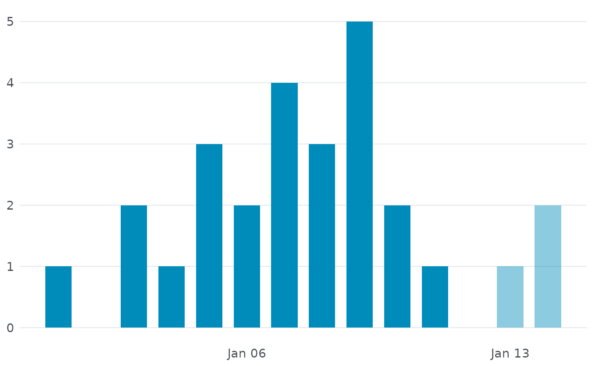
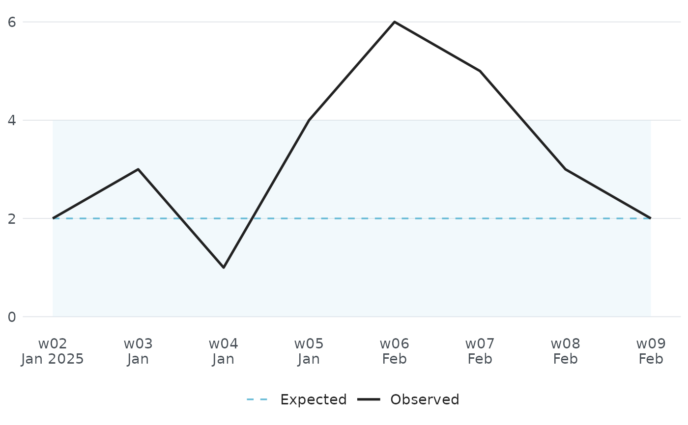
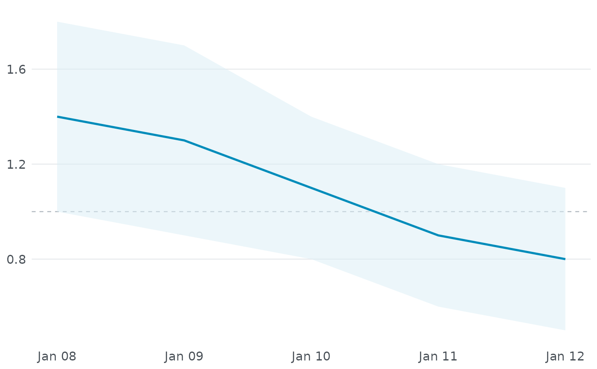

These functions build the three time-series charts used throughout the
EpiSODIC dashboard and outbreak reports: an epidemic curve, a trend chart
against the expected baseline, and an effective reproduction number
(\(R_t\)) chart. Each takes the small, already-summarised data frame the
app itself works with, so they are also useful for reproducing a dossier's
chart in your own report or presentation. All three return a static
ggplot2::ggplot object that can be printed, saved with
ggplot2::ggsave(), or further customised with additional ggplot2
layers.
Usage
episodic_ui_epi_curve_chart(curve, lang = "nl")
episodic_ui_trend_chart(trend, lang = "nl")
episodic_ui_rt_chart(rt, lang = "nl")Arguments
- curve
A data frame with one row per day:
sample_date(Date),n_cases(case count), andincomplete(logical,TRUEfor the most recent day(s) where reporting is still catching up - these are drawn at reduced opacity as a visual reminder not to over-interpret a downturn that is really just a reporting lag).- lang
Language for axis labels:
"nl"(Dutch, default),"en","es","fr","de","zh","hi", or"ar".- trend
A data frame with one row per week:
week_start(Date),n_cases(observed count),expected(the Farrington baseline), andupperbound(the alarm threshold, shown as a shaded band).- rt
A data frame with one row per estimation window:
window_end(Date),mean(point estimate of \(R_t\)), andlower/upper(95% credible interval). A dashed reference line is drawn at \(R_t = 1\), the threshold between a shrinking and a growing outbreak.
Value
A ggplot2::ggplot object.
Examples
curve <- data.frame(
sample_date = seq(as.Date("2025-01-01"), by = "day", length.out = 14),
n_cases = c(1, 0, 2, 1, 3, 2, 4, 3, 5, 2, 1, 0, 1, 2),
incomplete = c(rep(FALSE, 12), TRUE, TRUE)
)
episodic_ui_epi_curve_chart(curve, lang = "en")

trend <- data.frame(
week_start = seq(as.Date("2025-01-06"), by = "week", length.out = 8),
n_cases = c(2, 3, 1, 4, 6, 5, 3, 2),
expected = c(2, 2, 2, 2, 2, 2, 2, 2),
upperbound = c(4, 4, 4, 4, 4, 4, 4, 4)
)
episodic_ui_trend_chart(trend, lang = "en")

rt <- data.frame(
window_end = seq(as.Date("2025-01-08"), by = "day", length.out = 5),
mean = c(1.4, 1.3, 1.1, 0.9, 0.8),
lower = c(1.0, 0.9, 0.8, 0.6, 0.5),
upper = c(1.8, 1.7, 1.4, 1.2, 1.1)
)
episodic_ui_rt_chart(rt)
